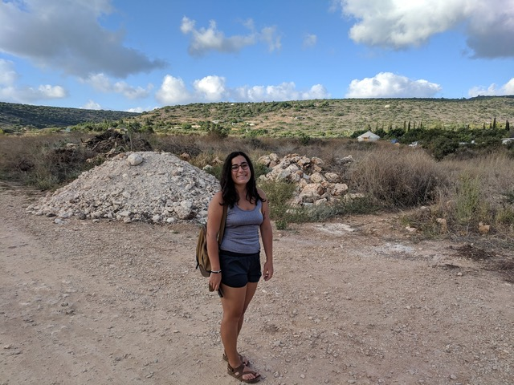

Goni Halevi
By Olivia Jerram | July 15, 2020
Princeton University graduate student Goni Halevi walks through Klil, a small ecovillage located in the northern part of Israel. Courtesy: Goni Halevi.
Name:
Goni Halevi
Age:
24
Hometown:
Tel Aviv, Israel
Department:
Astrophysical sciences at Princeton University
Research topic:
Simulations of fluid dynamics and nuclear reactions in high-density stellar remnant collisions.
Goni Halevi studies computational astrophysics. She is matter-of-fact. She wears round, tortoiseshell glasses that she adjusts often as she introduces herself to me. She is a first-generation college student. She is a queer woman, she tells me. She has long hair that fades to deep purple at the ends. She is a UC Berkeley alum and says she strongly supports public schools. She is Israeli, but she grew up in the South Bay.
I grew up there, too. It turns out we also both have relatives who live in Hong Kong. We both went to school at UC Berkeley, though not for the same four years. We both wanted to be physicists when we arrived there. And we both took the same introductory astrophysics class with the same professor, years apart, and both ended up in the astronomy department instead.
When I ask Goni why she left the physics department behind, she tells me about the mechanics and wave motion class she took during her first semester of college. One day, she overheard a group of men in that class talking loudly about how they had stayed up until 4 a.m. to watch the announcement of the Nobel Prize in Physics.
“I just felt like, oh, wow, I’m not passionate enough about this to compete against people like this,” Goni tells me.
I remember feeling like that, too.
When she changed her major to astrophysics, Goni says, she was looking for a smaller, more communal department without all the “posturing” and the “competitive atmosphere.” But of course, she didn’t only choose to study astrophysics to escape the boys’ club — growing up near Lick Observatory, she remembers her dad driving her up the mountain to look at the telescopes.
And of course, in becoming an astrophysicist in academia, Goni hasn’t actually escaped the boys’ club at all.
“When I was applying to grad school, [Chrisian Ott] was removed from his position because of sexual harassment at Caltech. And I had to decide … if I wanted co-authorship on [the] paper that I had worked on, knowing that he would be on it as a person found guilty of sexual harassment,” Goni says. “And in the end I decided to, so my name is right next to his on that author list.”
A few months later, when she visited Princeton, a student there who had worked with the same professor as an undergraduate told her that she should “totally go to Caltech for grad school because he’s going to come back from his year of unpaid leave right when you start, so it’ll be perfect timing.”
“It was crazy to me that someone could recommend that I work with someone who sexually harassed his grad students and not even bat an eye at that,” Goni says.
In this way, Goni tells me she was lucky that she was able to see the bad parts of academia while she was still an undergraduate, that she “went into it with [her] eyes open.”
“Going into grad school, I knew I [was] open to doing different kinds of science than what I [thought I was] interested in … because the most important thing to me is that I am in a supportive environment,” Goni says. “You should never feel like you have to work with someone who makes you uncomfortable or who doesn't support you as a person.”
So after bouncing around to a few different research groups at Princeton, Goni settled into computational astrophysics — a niche with the right mix of exciting science and supportive scientists. Specifically, Goni simulates mergers between white dwarfs and neutron stars or black holes.
Neutron stars are the collapsed cores of supergiant stars, and depending on their mass, they can form black holes. If these astronomical objects collide with a white dwarf, it will be ripped apart, and temperatures will reach a height at which nuclear burning occurs. These nuclear reactions, like carbon fusing into magnesium, are driven by the turbulence of the white dwarf matter after the collision, and that’s what Goni is curious about.
“It's something nobody has really done before because it's computationally difficult; it's a hard numerical problem. So it's fun to be able to do that,” Goni says.
She adds that researchers have studied these simulations before, but never with the inclusion of magnetic fields — the driving force behind the turbulence and fluid-mixing that makes these collisions so interesting to her.
I tell her that most of that went over my head but that I recognized some vocab words from classes I’ve taken, and we laugh for a minute. Then I ask her what else she likes to do when she’s not running these simulations, and she mentions that she makes prints using linocuts — a technique that is almost ritualistic, process-focused, kind of like her research, she says. She also tells me that she loves to teach.
Princeton doesn’t have a lot of opportunities for graduate students to teach on campus, but they do have the Prison Teaching Initiative. Through this, she has taught college-accredited courses in astronomy, math and physics to inmates pursuing associate's degrees at a New Jersey state prison.
It’s an all-male adult prison, she tells me, so the teaching environment is in some ways very different from ones she’s been in before. Obviously there’s more security, more rules about what you can and can’t say in the classroom, but overall it’s much more positive than negative. The students aren’t there to “impress their parents with their GPAs or anything like that,” she says. “The priority is learning.” She pulls out her favorite moment for me:
“I was super anxious about teaching [the math] class because … everyone came into it with a really bad attitude about their ability to do math and their past experiences in math classes,” Goni says. “Being able to read the evaluations at the end of the semester and seeing the students say, 'Once you actually understand it, math is really fun,' and 'I never thought that I would like or be excited about math,' it was just nice to have [had] the opportunity to correct a bad education that they had gotten in the past — instead of just teaching them something new, really teaching them a different way to look at themselves and their ability to learn.”
We spend a few more minutes talking about her students, and after that, our conversation drifts to all the places she’s lived and worked. I wonder aloud whether she remembers growing up in Israel before her family immigrated.
“We still have the apartment that I grew up in, that I lived in for the first two years of my life, so in a way, when I'm there, it feels like I kind of have memories,” Goni says. “You know, when people tell you stories and then they become your memories.”
But mostly, she remembers the trips she’s taken back there over the years — going to the beach with her cousins, having dinner with her Moroccan grandmother every Friday night for Shabbat.
“[My grandmother] … immigrated from Morocco to Israel when she was a teenager, so she cooks exclusively Moroccan food and makes us eat all of it. And [she] is just constantly exclaiming things in Arabic and French while cooking that nobody else understands,” Goni says, laughing.
She tells me briefly about the history of Tel Aviv, the ancient buildings in Jaffa, the amazing hummus place her dad would take her to and the time she visited the Dead Sea and Jerusalem. She tries to describe what it’s like to be in such a small country situated between an arid desert and humid, sandy beaches — a place that feels like home to her, possibly more than anywhere else, but definitely more than Princeton.
“As an Israeli immigrant, I have often felt culturally isolated in academia. I grew up with a strong community of family friends who shared my language and culture, with whom I could celebrate Jewish holidays joyfully and communally. In moving to Princeton, I sacrificed that, and I miss it tremendously,” Goni says. “At the same time, that upbringing brought with it a Zionist indoctrination of sorts, and now that I am outside of it, I’ve been able to grapple much more with what was previously a limitation in my left-wing politics: Israel’s oppression of Palestinians. It feels hard to do that work alone, with nobody who shares my identity and connection to Israel to talk to about it, but I try to.”
After this, Goni adds that while she has been asked invasive questions about the Middle East during research meetings or other scientific settings, she wants me to know that she has not faced as much discrimination in academia as some of her peers have.
“I think people throw around a lot that there is no place for politics in science, and identities don't belong in science and don't affect your science. And I think that is a very privileged viewpoint,” Goni tells me. “If you really don't have to think at all about your own identity while you're doing science, that means that you are very privileged to be in that position because for many of us, we can't separate those things.”
She pauses for a moment, adjusts her glasses, and says, “That is a real part of being a scientist for a lot of us.”
To learn more about Goni's research, visit her website and to buy one of her prints, swing by prints_by_goni on Instagram.